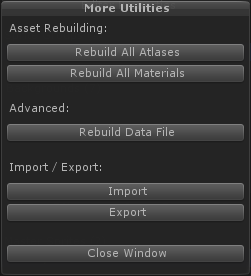

Working in Multiple Projects
Sprite Factory includes an Import / Export feature to help make it easier to share sprites among projects. This is very useful if you have multiple people working on sprites on different computers. While the system makes it easier to manage, there are still many areas where you could run into problems if you do not plan your projects properly and follow some very important guidelines.
The Import / Export feature of Sprite Factory uses Unity's built-in Unitypackage functions to create an export package. It also creates an .sfex file along with the .unitypackage file. This pair of files makes up the export set. The .sfex file contains information about the assets contained in the .unitypackage file and is used to compare the assets in the package to the assets in the project into which they are being imported. This information allows the importer to detect file conflicts and report critical errors and warnings before actually importing anything that might cause problems in your project.
How Unity's Asset System Works
Before getting into the actual import / export process, you should understand how assets are handled by Unity. This will help you avoid very time-consuming problems when moving assets between projects. If you are already an expert with Unity, skip on to the Asset Replacement During Import section.
The all-important GUID
When any asset of any type is added to a project (an image, a prefab, a script, etc.), Unity automatically creates a unique GUID for that asset. A GUID is a unique identifier which allows Unity to track that asset and keep links to that asset regardless of where it is moved in the project folder. Every asset has a GUID assigned when it is first imported by Unity. The AssetDatabase keeps track of where the asset is actually stored (the path to the asset). In order to retrieve an asset regardless of its path, you can give the AssetDatabase the GUID of the asset and it will locate it on disk and return it. The GUIDs are also used to link Components to their source scripts and to link variables that reference scripts, prefabs, or other assets to their source files.
Same file, different GUIDs?
If you take one file and place it into two separate Unity projects individually, even though they are exactly the same, each file will be assigned a different GUID. What you end up with is two identical files in two projects which have different GUIDs and therefore are considered to be different assets by Unity. This is an extremely important concept to understand when it comes to working with assets in multiple Unity projects. This is why, if you were to take one Unity project and simply copy the Assets folder to another project using a file manager (Windows Explorer, Finder, etc.), every file in the second project would have a completely different GUID and all object links would be broken. Custom script-based Components would be missing, inspector-assigned variables would be missing, etc. The GUID of every asset in the project has changed and Unity doesn't know where to find the sources of those object links anymore because they're still referencing the old GUIDs. (However, if you were to enable meta files in your projects, the straight file copy would work because the GUIDs would now be stored in .meta files for every asset right along side that asset in the folder and Unity would use this stored GUID instead of generating a new one.)
Copying assets and preserving their GUIDs
When copying assets to another project, in order to preserve the GUIDs of all assets and therefore preserve all object references and Component-script references, you can create a Unitypackage file containing the assets and their dependencies. Exporting files in a Unitypackage allows you to import assets in another project while preserving the GUIDs.
Generally, Unitypackages work very well, but it's possible to run into problems if you did not handle asset sharing between your projects properly. Specifically, problems can occur when replacing existing files during a Unitypackage import. Below are some of the asset-replacement scenarios you might run into when importing a Unitypackage.
- Same GUIDs, different file location or file name
During import, Unity will first look for existing assets based on GUID. If it finds an asset with the same GUID as the importing asset anywhere in your project, it will replace that asset with the one in the Unitypackage. Even if the asset has been moved to a different location in the project and has a different filename, Unity will import the data into that asset, but the asset will remain at the same path and filename as before the import. (This is not a problem for most cases, but it will cause problems with Sprite Factory's internal Master Sprite and Sprite Group files.) - Two identical files, different GUIDs
When importing, first Unity will look for an asset match based on GUIDs as mentioned above. If no asset in your project has a GUID that matches the incoming imported asset's GUID, it will then try to replace based on the path and filename. If Unity finds an asset at the same relative path and filename in your project as the incoming imported asset, it will not replace this asset (but it may replace the data in the asset.)* Importing over an existing asset will never change the original asset's GUID. The asset will not be replaced and therefore the existing GUID will remain. All links to this asset in the current project will remain unbroken. However, all links to the importing asset from other assets in the Unitypackage will be broken because they reference its original GUID, not the GUID of the asset in the current project which was unchanged. This means other imported assets that relied on the asset being imported will not work properly once imported.
* Possible data replacement in the colliding asset: If the imported asset is of the same type (.prefab, .asset), Unity will try to replace the contents of the asset without changing the GUID. For example, on a prefab, Unity will replace the contents of the prefab and it will look like it was replaced properly, but in actuality the GUID will remain unchanged and any other importing assets that rely on the importing prefab will be broken.
Asset Replacement During Import
The above information about GUIDs and filenames is relevant because when you import sprites, the Master Sprite assets themselves, their dependencies like source images (the individual images making up the frames of animation) and source materials (if you've defined any Material Sets), and even prefabs (if you exported those) based on those Master Sprites along with their dependencies must be imported too. If assets already exist in the project that collide with the assets being imported, you may have unexpected results unless GUIDs match properly. And in the case of SpriteFactory's saved assets, Master Sprite and Sprite Group replacements require that the names match as well as the GUIDs.
Replacing Ungrouped Sprites
- Ungrouped Sprites can be replaced without issue during import by following these rules:
- The Master Sprite name must be identical in both projects (case sensitive.)
- The Master Sprite GUID must be identical in both projects.
- If any Source Images used in this Master Sprite already exist in the target project, the GUIDs must match in both projects. If the source images do not exist in the target project, they will be brought during import.
- If any Source Materials used in this Master Sprite already exist in the target project, the GUIDs must match in both projects.. If the source materials do not exist in the target project, they will be brought during import.
- Errors to avoid:
- Ensure that the same Master Sprite (same GUID) does not exist in the target project under a different group. This could happen if the Master Sprite was imported in the past and then moved to a different Sprite Group.
Replacing Sprite Groups
- Sprite Groups can be replaced without issue during import by following these rules:
- The Sprite Group name must be identical in both projects (case sensitive.)
- The Sprite Group GUID should be identical in both projects, though this is not critical.
- If any Source Materials used in this Sprite Group already exist in the target project, the GUIDs must match in both projects. If the source materials do not exist in the target project, they will be brought during import.
- If any Master Sprites in this Sprite Group already exist in the target project, the GUIDs and names (case-sensitive) must match in both projects. If they do not already exist in the target project, they will be brought during import.
- If any Source Images used by sprites in this Sprite Group already exist in the target project, the GUIDs must match in both projects. If the source images do not exist in the target project, they will be brought during import.
- Errors to avoid:
- Ensure that the none of same Master Sprites (same GUIDs) in this Sprite Group exist in the target project under a different group. This could happen if a Master Sprite was imported in the past and then moved to a different Sprite Group
- Special considerations:
- Sprite Groups can be merged across projects. If the source project's group contains 1 Master Sprite and the target project's existing group contains 3 different Master Sprites, the final merged Sprite Group will contain 4 Master Sprites. Standard name and GUID conflicts apply.
Avoiding Import Issues
Before creating any Sprite Factory data, you must take a few steps to ensure you do not get GUID conflicts when exporting / importing sprites between projects. These steps need to be taken at the very beginning when you set up a project, and you need to be continually aware of following proper procedure when adding assets, sprites, and sprite groups as your projects grow.
- Install Sprite Factory from the same source package in all projects. DO NOT copy the SpriteFactory folder directly from the Assets folder to another project unless meta files are enabled in both projects. This ensures all Sprite Factory files will have matching GUIDs.
- If you are going to work on the same Master Sprite separately in two projects, create the sprite in one project, then export it and import it to the second so that both have the same GUID. Do not create the same sprite independently in two separate projects with the intention of one replacing the other during an import because you will have problems.
- The above applies to Sprite Groups as well.
- If you share Source Images on multiple projects, ensure they have the same GUIDs on all projects. Generate the GUIDs in one project, then export the source images with a Unitypackage and distribute them to the other projects, or enable meta files and copy the source images along with their meta files. Do not allow Unity to build different GUIDs for the same source images.
- Have a naming scheme agreed upon with other members of your team and make sure your names do not overlap each other for Master Sprites and Sprite Groups in different projects unless they are for the same sprite or group with the same GUID.
- If you're going to replace a source image/material, do not delete it from the project first. Just replace it and Unity will keep the GUID.
- SpriteFactory must exist in the same relative path under the Assets folder in the export source and the import target projects. You can move the SpriteFactory folder to another location in your project, but this relative location needs to match on all your projects for importing to work. The path is baked into the export set, so if you've already exported data and later move the SpriteFactory folder, the import will fail unless you move the SpriteFactory folder back to where the export set is expecting before you import. You can move it again afterwards.
What if I didn't follow all these rules from the start?
Don't worry. The world isn't going to explode... I hope. :)
Some of the "Rules" outlined above are bendable as long as you are fine with the consequences. Only a couple of errors are critical like filename / GUID mismatches when replacing Master Sprites, in which case Sprite Factory will not allow you to import, but most of the others like GUID matching on the Source Images aren't critical. They will still import, but certain things may need to be manually repaired. In the case of the Source Images GUID mismatch, the sprite frames that use those images would need to be replaced one-by-one in the editor. Either that or you could delete the conflicting images in your project before import, in which case the imported sprites would not be broken, but any sprites or other assets existing in the project already that used those images would need to be repaired manually by replacing the frames in the editor. Each case is different, and there is always a way to recover, it usually just means some wasted time.
The Import / Export Process
The actual process for importing and exporting is very easy, assuming you followed the guidelines above. Under the Utilities section of the main editor window, click More Utilities.

Import
Import data from an existing .sfex + .unitypackage set. This will open a file dialog asking for a .sfex file to import. Once you've selected a file, the Import window will appear which will give you information about the package. If there are any warnings or errors, they will be displayed here. See Import Window under Using The Editor. If there are no errors or warnings (or you accept the warnings and decide to import anyway), click Import and the package will be imported. Please be patient while importing takes place. If you have a large project with many Master Sprites it may take a very long time to import because every sprite will be rebuilt. ALWAYS BACK UP YOUR ENTIRE PROJECT BEFORE IMPORTING!
Export
Export data to an export set. This will open the Export window.
See Export Window under Using The Editor. You can choose to export ungrouped Master Sprites, Sprite Groups, or both. You can also choose whether you want to export sprite prefabs made from the selected Master Sprites. Once you have chosen what to export, you will be prompted where to save the files. Sprite Factory will generate a .sfex file and a .unitypackage file. Both files are required for importing.
A Possible Team Usage Scenario
Multiple people create sprites independently on different computers (different projects). This may also include prefabs created with the sprites which can be included in the export.
One computer (project) is designated as the main project into which the completed sprites will be imported.
Sprites and groups can be updated and replaced (imported) when changes are made if nessary.
Tips:
- A naming scheme will help prevent naming overlaps for different sprites and groups.
- Importing can be a slow process because it requires all existing Master Sprites and Sprite Groups to be rebuilt. If a project has hundreds of sprites, this can take a long time. Because of this, it's best to do as few import as possible. Import many sprites together at once if possible.
- Team members can work on prefabs using these sprites as well and export them with the Master Sprites.